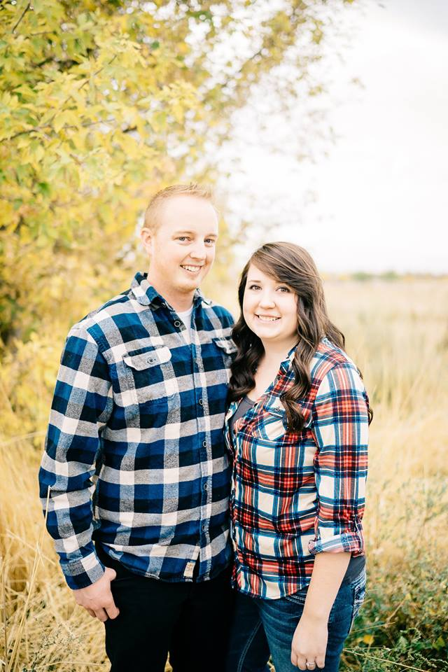

Family
My story begins in 1992 in Cedar City, Utah. My parents met going to school at Southern Utah University. My mom, Jerian, became a school teacher and taught me about hard work and always following through with what I say I will do. My dad, Allen, taught me from a young age about technology. By the age of seven I was navigating my way around computers and learning about the different components. My dad became a Technology Specialist for a high school and continues to teach me.
In June of 2013 I married my wife Toni. Together we keep each other busy whether it be with school, work, or just hanging out. Toni is currently a student at Weber State University in Ogden, Utah. She is nearly done with her Bachelors Degree in Public Relations and Advertising. We have two dogs, Leia and Tymbur, who love to go on hikes, eat, and bark at every other dog.
Hobbies
Baseball has always been my biggest passion. As a kid I started playing when I was three years old and continued through high school. My love for the Los Angeles Dodgers grows every year even with all of the heartbreak they provide.
I'm currently training for a half marathon and a Spartan Race. I never thought that I would love running as much as I now do, but the feeling of wanting to beat yourself and be better becomes addicting.
When Toni and I are't speinding our time at work or at school we love to be outdoors. Most of the summer weekends you can find us outside camping and enjoying the beautiful places Utah has to offer.
The reason I decided to get into development is because of my love for playing video games. Unfortunately, with work and school taking so much of my time I don't have time to play much anymore. I range from first person shooter games (Halo and Battlefront) to sports games and anything in between.
Goals
1 Year
- Finish 30 more credit hours of school
- Find an internship in Software Engineering
- Run a half marathon
5 Years
- Finish School
- Find a company that I love working for
- Be finanically stable enough for my wife to start a family
20 Years
- Earn my Master's Degree
- Pay off my house
- Save for college for my kids